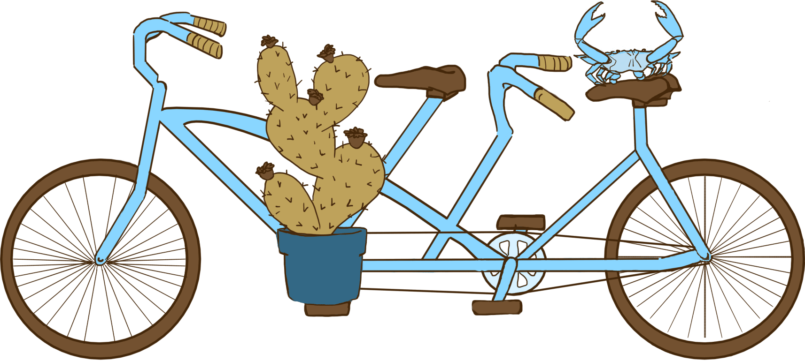

It's taken nine years, but Gen and Emma are finally updating their tax filing status. We're so excited,
we made a website about it. You can find information about the wedding in this section. We
also have a section with our story, a section to RSVP online, a section for the registry, and
a section about visiting Chicago.
We wanted to get married somewhere representative of our community, so we chose a venue through the Chicago
Parks District. The South Shore Cultural Center started as an exclusionary country club in 1905, but it was
bought by the Parks District 70 years later. Its beach, nature center, gardens and even its golf course are
all open to the public. People can take arts classes, gather for community events, and, happily, get married
at the center. The center will remain open to the public during the wedding, but the dining room and
ballroom is reserved for guests.
This won't be a fancy marriage, but we will have more than a bicycle made for two. There will be a short
ceremony, followed by a cocktail hour with appetizers, then dinner, then dancing, and dessert. The dress
code will be cocktail attire, and please keep in mind that Chicago can get brisk in November. We're rolling
the dice with the weather; autumn leaves were still on tree branches last November, but we have gotten snow
in October before.

The venue is easily accessible by public transit. You can take the 6 bus to the
South Shore Cultural Center, getting off at the S. Shore Drive & 71st Street stop. You can also ride the
Metra Electric METRA train line to the South Shore stop, but make sure the line is scheduled to stop at
South Shore because not every train is. The venue is marked on the map as a yellow star icon. The bus stop
is marked on the map with a bus icon. The METRA stop is marked with an M icon. The venue has a parking lot
as well, and even though Parks employees expect there will be plenty of available spots in November, we plan
to reserve spots as well.
Hey Good Loching
In late autumn, 2015, Gen is still a newcomer to the campus Episcopal church, so when she goes into
the kitchen after Sunday service, she's introduced to Emma Koch, pronounced "Cook" (Emma is pronounced
"Emma"). Emma happens to be cooking the shared dinner that Sunday, so Gen makes a very bad pun,
asking "do you always cook the dinner because your last name is Cook?" Emma fixes her with an unimpressed
stare
and says, devastatingly bereft of any intonation, "Wow, I've never heard that one before."
And that is when Gen knows she and Emma Koch, pronounced "Cook", will never be friends.
Fast forward to autumn, 2016, after a year of Sunday services, a class on medieval masculinity, and
group outings to bars around Chicago. Emma texts Gen, "Does going to watch a hockey game with me at a
Rangers bar sound fun or nah?" Gen says, "yes." Even if Gen has no idea what a Rangers bar
is, and an only slightly better idea of what a hockey game is, it still sounds fun. Later Gen asks "Do you
want to go to hear a weird Austin indie band?" and Emma says "yes," because she wants Gen to think she's
cool.
It's now been over eight years of watching hockey games, explaining hockey games, attending concerts,
playing darts, frequenting breweries, going camping, being terrible at bowling, day tripping, road
tripping, and visiting state parks. Emma drinks Shiner beer and has opinions about country music now. Gen is
thankful someone lets her play fiddle with the mute off. Emma is still really into watching sports. Gen is
still really into the free T-shirts they give away at sports events. We are still having fun.
So, we're getting married.
Give Me Your Answer Do
Chicago Your Own Way
We love Chicago. Even when we're going numb from the lake effect, or hiding from NASCAR, or wondering
where the 6 bus is, we love this city. We're both annoying about the homes we come from: Emma won't eat
shellfish 20 miles inland of Baltimore, and Gen has a mean "What'd you say about Texas?" stink eye. We
can't wait to be annoying about our home here.
How to Chicago
Chicago has a robust, if not always consistent, public transit system. The CTA is the main bus and train
system operating in and around the city proper. Metra trains go between the city and the suburbs, and
PACE buses appear every once in a while to confound everyone.
To ride the CTA, you probably want a Ventra card,
which
you can order through the mail or purchase at select
stores in Chicago. You can also purchase a card in any of the vending machines at L train
stations.
You can register your card through the Ventra app
online or
in the app store. If you don't have a Ventra card, you can pay by tap with compatible credit cards or phone
payment plans. You can even feed the machines good ol' cash, but be aware that you will not receive
change. To ride the Metra rail lines, you need to buy Metra tickets, either through the Ventra app, at
select stations, or on board the train for an upcharge.
The L train stops are indicated by color with train icons in the map below. The grey
train icons are stops in the loop shared by the green, orange, brown, and pink lines. The loop refers to the
eponymous area where all lines, except the yellow and the weekend purple, meet in downtown Chicago.
Where to Chicago
Chicago is a city of neighborhoods. We live in Hyde Park, a few blocks west of the lake, east of the
Metra tracks, and north of the Museum of Science and Industry. There are a lot of places to go in our
neighborhood (museums, bookstores, coffee houses, restaurants, bars, nature trails, a lagoon) but there are
a lot of other places we like too.
We marked some of these places on the embedded map. You can find our favorite spot for dim sum in
Chinatown, our go-to bar in Bridgeport, and our two affordable places to grab a drink in the Loop.
Further north, you'll find our favorite bowling alley in Ravenswood, around the corner from a great brewery,
and a few blocks from a fantastic cocktail lounge. We try to stay away from Wrigleyville, especially when
the Cubs are playing, but we'll brave the crowds for a peaceful historic cemetery.
We put a honkytonk in Uptown on the map and called out a great bar with mussels below another cemetery in
Andersonville. We have a few more cocktails marked in Logan Square, not to be confused with Lincoln
Square, where you'll find a great sushi restaurant and a good dive bar in which to play darts.
Of course, Chicago has places where you can do more than eat, drink, or stare at tombstones. Museum
Campus has a museum of natural history, an aquarium, and a planetarium all in one place right off the lake.
Downtown has many tourist attractions, like the Sears Tower, the John Hancock Observatory, the Art
Institute, across the street from the original public library, and the Museum of Contemporary Art. Pilsen
has architecture left over from Czech and Polish immigrants who moved there in the mid-19th century and a
free museum celebrating art from the current largely Latino population. Lincoln Park is an expensive
neighborhood with a free zoo and nature conservatory, although the favorite conservatory amongst our friend
group is in Garfield Park. There are parks everywhere, including Grant Park, where you can stare at your
reflection in "the bean."
You can click the menu icon on the top left-hand corner of the map to toggle the layers: Eats and Drinks,
Entertainment, Hotels, and L Train Stops. Select which layers you want to view by checking their respective
boxes. Clicking on a listing in the layer menu will bring you to its corresponding location on the map and
show a brief description. You can also click on the icons directly.
You'll Look Sweet Upon The Seat
Listen, we don't need anything. And, we know travelling is expensive. We love gifts, don't get us wrong,
but if you're reading this webpage, we most likely love you more (unless Gen really screwed up the URL).
If you're looking back and forth between this page and your bank account, and you just bought a hotel,
and you just paid for extra leg room, and you need a sign that says you really don't need to
bring a gift, here it is: